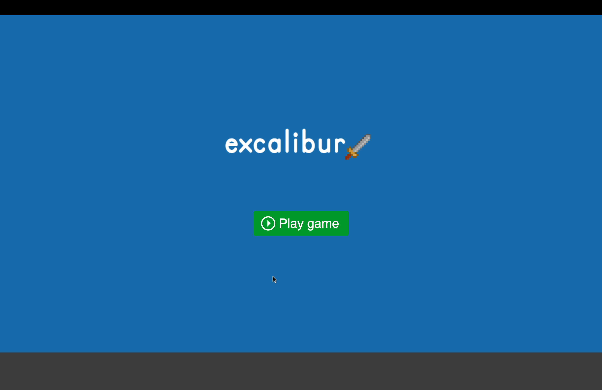
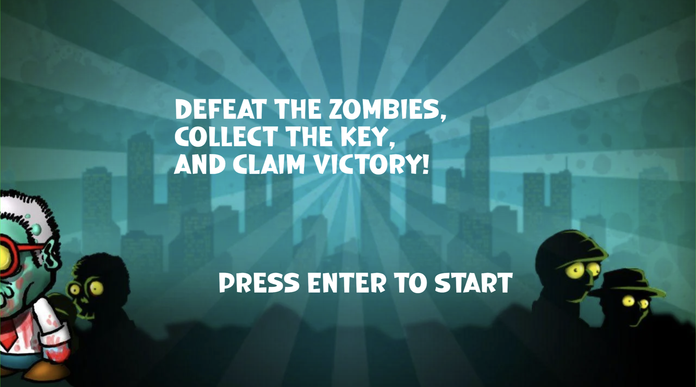

Over het project
Aan het einde van jaar 1 kregen we de opdracht om een game in Excalibur te maken. Als een mini game heb ik een grappige 2D platformer-zombie-game gemaakt waarin je een held bestuurt en moet vechten tegen vijanden en een sleutel moet verzamelen om te winnen. Het spel is ontwikkeld met Excalibur.js en JavaScript.
De physics van het spel zijn gebaseerd op een arcade-stijl met zwaartekracht en botsingsdetectie. De speler heeft een gezondheidssysteem en kan vijanden verslaan met kogels door op de spatiebalk te drukken. Ook kan de speler een hart nemen om meer health te krjgen en een sleutel opnemen om de level te winnen.
Wat heb ik gedaan?
- De game-structuur opgezet met Excalibur.js en JavaScript.
- Sprites en assets geïntegreerd voor een visuele ervaring.
- Een speler-object gemaakt met beweging, een hoed en een wapen dat kogels schiet.
- Physics en collision detection geïmplementeerd.
- Een UI ontwikkeld met health en score updates.
- De game is afgemaakt met een win- en gameover-scherm.
- Vijandelijke AI toegevoegd die de speler achtervolgt.
- Een systeem gemaakt waarin de speler sleutels verzamelt om het level te voltooien.
- Verschillende scenes toegevoegd: Start, Game, Death, End.
Galerij

